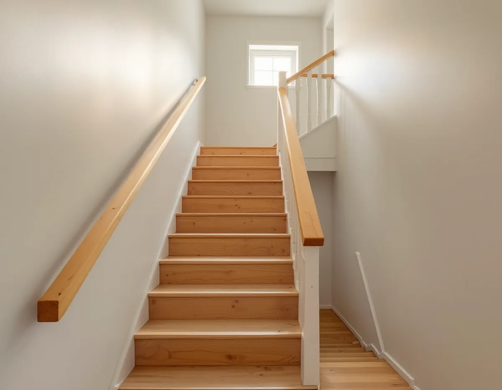
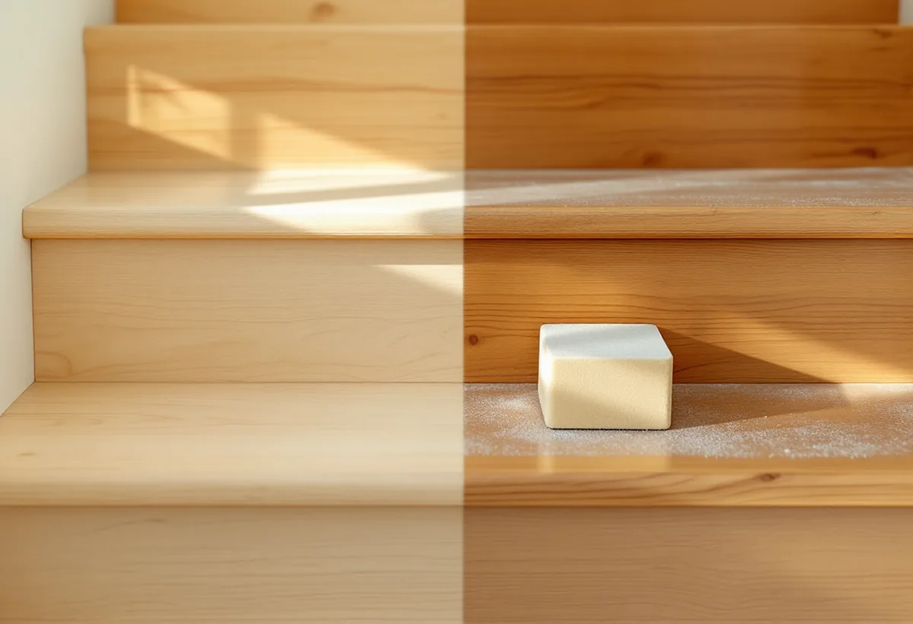

Platsbesök
Vi ser efter vad stegen, räcket och ledstången är gjorda av och behandlade med.

I ett hus i två plan är trappan en yta som både slits och syns, men den går inte att slipa i samma arbetsgång som golven.
Beskriv jobbet kort.
Något blev fel. Kontrollera uppgifterna eller ring 08 12 410 276.
Vi tittar på jobbet på plats innan du får offert.
Du ser vad som ingår och vad det kostar.
Vi drar av ROT direkt och sköter ansökan.
Geal Entreprenad AB, Bromma. Org.nr 559303-7566.

Stegen slipas ett och ett, räcket har en egen yta och ibland är stegen inte ens av trä. Geal Entreprenad AB slipar golv och trappor i radhus, kedjehus och villor i Järfälla, och vi går igenom trappan för sig innan vi bestämmer behandling.
Kommunens kulturmiljöplan beskriver flera småhusområden i Jakobsberg. Utmed Vretstigen och norra delen av Toppvägen ligger tvåvåningsradhus från början av 1960-talet, byggda av flera olika byggfirmor. Ekedalsområdet började bebyggas 1958 med radhuslängor i två våningar i den låglänta södra delen, och mellan dem och villorna finns ett parti med envåningsradhus med inredd vind och souterrängplan som utnyttjar sluttningen.
Villorna längs Betselvägen från 1950-talet är enligt planen uppförda i två plan, och kedjehusen vid Dressyrvägen från mitten av 1960-talet har en våning med inredd vind. Planen skriver att kedjehusen där är mycket väl bevarade sedan byggnadstiden.
I ett hus i två plan eller med inredd vind behövs en trappa mellan planen, och den kan vara lika gammal som huset.
Svenska Byggnadsvårdsföreningen har svarat på en fråga om ett trappräcke och en ledstång i ett hus från 1969 som såg ut att vara lackad furu, med skavda kanter och gulnat trä. Föreningen kallar det en klurig fråga. Ett sätt är att tvätta av, slipa lätt på de ställen som blivit nötta och bättra där, men det är svårt att behandla resten med något som inte täcker. Vill man demontera räcket och slipa allt kan det krävas mycket slipning, nästan fräsning, för att det inte ska bli flammigt, och träet gulnar igen. Det säkraste resultatet är enligt föreningen en täckmålning eller en lasyr.
Samma fenomen gäller stegen. En obehandlad furutrappa gulnar naturligt, och föreningen skriver att oljning ökar gulningen om oljan inte pigmenteras. Därför bestämmer vi kulören med dig innan vi slipar, inte efteråt.
Vi ser efter vad stegen, räcket och ledstången är gjorda av och behandlade med.
Finns gjutna steg föreslår vi prov innan något slipas, särskilt i hus från 1940–1980.
Steg, räcke och ledstång står som egna poster.
Golven runt trappan täcks, och järnskoningar lämnas på plats.
Stegen slipas ett och ett, och räcket slipas lätt där det är nött.
Såpa, olja eller fernissa läggs på enligt det vi har kommit överens om.
Ett golvjobb i Järfälla består av dagar med maskiner och dagar då lacken eller oljan torkar. Hur många dagar det blir beror på ytan, antalet rum, hur mycket som ska lagas och vilken ytbehandling du väljer. Enligt Golvbranschens riktlinjer för lackering kan rummet normalt möbleras efter minst ett dygn, medan mattor bör vänta minst en vecka. Tidplanen står i kostnadsförslaget.
Skatteverket räknar slipning av golv som rotarbete i ett småhus som används som bostad. Vilka delar av arbetet med trappan som räknas som rotarbete redovisar vi i kostnadsförslaget.
Avdraget är 30 procent av arbetskostnaden, högst 50 000 kr per person och år och högst 75 000 kr tillsammans med rutavdrag. Material och resor ger inget avdrag. Geal drar avdraget direkt på fakturan.
Antalet steg, om räcke och ledstång ska behandlas, om gjutna steg behöver provtas och vilken behandling du väljer. Efter ett gratis platsbesök får du ett skriftligt kostnadsförslag.
Vi publicerar inga prislistor, eftersom två golv med samma yta kan kräva olika mycket arbete. I kostnadsförslaget står slipning, lagning och ytbehandling som egna poster, med ROT-avdraget uträknat. Hur metoderna och ytbehandlingarna skiljer sig åt, och vad som ingår, beskriver vi på sidan om golvslipning i Stockholm.
Slipa parkett och trägolv – lack, olja eller lut.
Golvslipning i Stockholm →Takbyte, takbesiktning och plåtarbeten.
Takläggare i Järfälla →Jakobsberg, Viksjö och Kallhäll.
Takrenovering i Järfälla →Förråd, garage och ateljé som blir bostad.
Attefallshus i Järfälla →Planbesked, extra bostad och ansvar.
Byggföretag i Järfälla →Underhållsmålning i rätt tid.
Fasadmålning i Järfälla →Kedjehus, sekelskiftesvillor och parstuga i Stäket.
Fasadrenovering i Järfälla →Bruksvillor, radhus och 70-talsfönster i Järfälla.
Fönsterbyte i Järfälla →Bottenstycken, bleck och vita omfattningar.
Fönsterrenovering i Järfälla →Kedjehus, egnahem och gamla golvskikt.
Golvläggare i Järfälla →Radhus, kedjehus och souterränghus.
Badrumsrenovering i Järfälla →Kedjehus, radhus och souterräng.
Köksrenovering i Järfälla →Putsade radhus, kedjehus och villor i Järfälla.
Målare i Järfälla →Stuprör, skärmtak och plåttak i Järfälla.
Plåtslagare i Järfälla →Förgårdar, förråd och ytterdörrar.
Snickare i Järfälla →Lovfritt takbyte och papperen du sparar.
Takbyte i Järfälla →Ny tapet på skivväggar i radhus.
Tapetsering i Järfälla →Lovfritt, avvikelser och Kallhälls villor.
Tillbyggnad i Järfälla →Flytta badet och mät radon.
Totalrenovering i Järfälla →Eller ring 08 12 410 276, mån–fre 08–17.
Beskriv jobbet kort.
Något blev fel. Kontrollera uppgifterna eller ring 08 12 410 276.